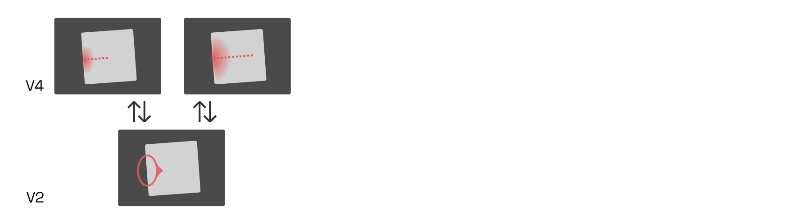

YinYangFit ☯
Modelling for automatic letterfitting, inspired by neuroscience

Acknowledgements
This research would not have been possible without funding from Google, for which I have Dave Crossland to thank in particular. I am grateful also to Simon Cozens and others for many valuable discussions.
Abstract
Adjusting letter distances to be visually pleasing is a challenging and time-consuming task. As existing tools are too primitive to reliably handle the infinite variety of typefaces, designers still need to rely on their intuitive judgment. I review how letterfitting fits into the current scientific understanding of how letters and words are perceived in the brain, and present approximate models that can be fitted to to existing, hand-fitted fonts using backpropagation.
Target audience
Designers and developers with an interest in neuroaesthetics.
Epistemic status: provisional
This article is based on a survey of hundreds of peer-reviewed articles, and in line with mainstream ideas in vision and neuroscience research. It is the product of many months of work and countless revisions. That said, even the in-vivo evidence for the suggested models is often indirect or circumstantial. Nothing in this article should be construed as final. I welcome corrections!
Introduction:
Letterfitting refers to the process of adjusting the distances between pairs of 
Red vertical bars show side bearings, blue vertical bar shows a negative kern. It’s often referred to as “spacing and kerning”, because pair distances are the sum of fixed amounts of space around every letter (so-called side bearings) and additional adjustment values for individual pairs (so-called kerns). Quality fonts often contain thousands of hand-kerned pairs that undergo weeks of testing and refinement, all by hand—because surprisingly, there still are no automated solutions that reliably do the
The heart of the problem: typographers can’t even agree what letterfitting does. Some say that it’s about achieving a certain balance between letter pairs, the judgment of which is to spring from the designer’s personal aesthetic
All three of the above descriptions seem to point to the same story: that skilled designers achieve a pleasing visual balance between letter pairs because they have honed their perception through the careful study of existing fonts, and that perfectly balanced letter pairs also happen to result in perfect legibility and a perfectly even typographic colour. Does that story hold water?
As it turns out, research suggests that colour, balance, and legibility have different neural correlates. They are often in rough agreement, but optimizing for one does not guarantee a good outcome for the others. Evenness of colour is a question of texture perception; quality of balance is a question of competitive inhibition between perceptual gestalt groups; and legibility is a question of the reliable detection of letters and n-grams from pre-processed visual features. On top of that, all of the above are affected differently by font size and colour contrast.
If we want to develop robust, universal automatic letterfitting
In a way, it is surprising that type design and cognitive psychology are so divorced from one
A letterfitter’s objectives
Before we dive into the science, let’s review how the three ideas fit into a broader cognitive science context.
Typographic colour refers to the visual texture created by the ink on the page. Most obviously, a darker colour is the result of bolder, narrower, more tightly-fit type. But the line spacing contributes to a document’s characteristic texture as well, and so does the angle of the letters (i.e. upright vs. italic) and, ultimately, the design of the individual letters. Some design teachers like to give colour-based letterfitting prescriptions, like “match the black and the white” or “equalize the negative space in the counters with the negative space in the gaps.”
Next, balance. The brain has a general tendency to group visual features into perceptually coherent objects. Meanwhile, the typographer’s job is to group letters into perceptually coherent words. When the letters are fitted poorly, the perceptual grouping into words will fail: this we call poor balance.

Perceptual grouping networks are a very fundamental piece of our vision circuitry, and not exclusive to reading. Researchers have known about them for a long time, too: psychologists over a century ago described our tendency to recognize the sum, not the parts, of arrangements of 
Finally, legibility. Children first learn to recognize individual letters as physical objects, then learn to associate these objects with sounds, then learn to reproduce the sounds letter by letter, and finally become skilled readers by developing neurons that detect, as a shortcut, combinations of letters directly. Each one of these developmental steps builds on the next by repurposing a different area of the brain. A type designer manipulating a letter shape will perceive it as a geometric object (like a child), but an adult reading the newspaper perceives combinations of letters in parallel (or almost in parallel) using entirely unrelated neural circuitry. These letter-combination-detecting neurons work best, of course, on letter pairs that resemble those seen in the past. It would be unwise to ignore this conditioning effect, but fortunately we can fit primarily for Gestalt and still achieve great legibility simply because other fonts were designed by humans, and therefore fit, by and large, for Gestalt as well.
A brief tour through our visual system: area V1
Our brain’s visual processing system is divided into multiple regions, each of which represents the incoming visual imagery at a different level of abstraction. Anything we see—landscapes, patterns, text—activates neurons in each one of these brain areas. While neurons in the lower-level areas respond to concrete details in the visual input, neurons in higher-level areas respond to the presence of particular configurations of such details. Both low- and higher-level areas are involved in perception, allowing us to simultaneously experience the raw visual qualia and comprehend what we see on a more abstract level.
Whether we are looking at an apple (and recognizing it as such), a tree (and recognizing it as such), or a word (and reading it)–most of of the neurons involved are the same.

Many readers may have had some exposure, however superficial, to the concept of deep convolutional networks. It is tempting to conceptualize the architecture of the visual cortex as such a network: yes, raw visual input enters at the bottom, undergoes convolution through multiple layers, then comes out the top as a neat classification of a word. But perception, and perceptual grouping in particular, is a dynamic process. It is not a computation with input and output, but a dance of electrical activity that evolves through
With that in mind, let’s go on a brief tour through our visual system.
Sensory input from the eye travels up the optic nerve, through the lateral geniculate nucleus (LGN) on the brain’s thalamus, to the visual cortex at the very back of the

The first phalanx of cells—the primary visual cortex, or V1—performs what amounts to a band-filtered wavelet decomposition. Each neuron here is

These neurons are called simple cells, and we can easily predict their response to a given input, depending on the tuning and location of their receptive

As it turns out, some V1 neurons are less sensitive to phase than others, and some may even respond equally to both lines and edges, as long as scale and orientation match their tuning. Those cells are called complex cells
Coincidentally, contrast and colour are irrelevant to reading—we can read black-on-white just as well as white-on-black—suggesting that it is mainly complex cells that provide the relevant signals to higher-level brain
To be clear, this does not mean that the signals from simple cells are lost or discarded. Just like the signals from colour-detecting cells in the so-called blob regions of V1, which are not further discussed here, the signals from simple cells do contribute both to our experience of vision and to the activity of higher-level brain regions. For reading (and thus letterfitting) purposes, however, we will focus on the responses of complex cells.
Neurons in V1 (and elsewhere in the cortex) use lateral connections to inhibit their neighbours. This is called lateral inhibition. Because the strength of the inhibition depends directly on the strength of the neuron’s own activation, this setup helps the most active neuron to mute its neighbours. This sharpens the response landscape, which is necessary in practice considering that neurons tuned almost to the right orientation and frequency (but not quite) will still fire quite a bit, effectively adding noise to the signal. Lateral inhibition means that V1 neuron’s firing rates take some time to stabilize, something that models may need to take into account.
We will return to the question of how V1 outputs vary in response to changing pair distances in a later section. For now, let’s move on to how these signals are processed in subsequent areas.
Area V2, Portilla-Simoncelli texture correlations, and crowding effects
Area V1 deconstructs the incoming imagery into thousands of edge and line fragments. Area V2 helps find patterns in those signals, patterns that form the basis for the perceptual grouping effect we are interested in.
Each neuron in V2 takes its input from a combinations of neurons in
Presumably, the ability to respond to correlations—not just sums—of inputs from V1 is conferred to V2 neurons by their nonlinear activation curve. Consider a toy example in which two V1 neurons each fire with rates between 0 and 1.0. Then a V2 neuron with the following activation curve would fire only if both inputs are sufficiently active, summing to at least 1.5, thereby implementing correlation:
Unfortunately, we have no direct measurements of what each of these neurons respond to most strongly. However, pre-trained image classification networks contain units in their early convolutional layers that are, presumably, somewhat analog to V2 cells. By iteratively adjusting white noise until these units are maximally activated, we can estimate what kinds of correlations in the input they are tuned to:
On their own, many of these correlations may appear to be meaningless. Together, however, they describe the local texture of an image. As it turns out, a mere few dozen of such correlations are enough to fool human texture perception: we can iteratively generate fake images, starting again from white noise, that result in the same combination of local averages of these presumed V2 responses as in the original

As evident here, a mere approximation of these averaged image statistics measured by V2 is enough to simulate, with eerie fidelity, how we perceive our visual periphery. This is no coincidence: after all, higher-level areas (here, V4) precisely respond to particular configurations of such V2 neurons, so synthesizing images which evoke similar V2 activations will also result in similar higher-level perceptions, even if the actual input signals are quite
That V2 neurons so effectively capture local image statistics presents us with a first opportunity to reify the heretofore vague concept of typographic “colour” into something concrete and computable: namely, local combinations of such (simulated) V2 responses. If these remain uniform across the whole page, the texture is perceived as even:
In a truly colour-based letterfitting strategy, which should be relatively easy to implement, we would iteratively adjust pair distances within an image of text until a chosen set of V2 responses is nice and uniform across the entire image. And indeed, this would probably be the most effective and biologically faithful approach to achieve a perfectly even texture. Unfortunately, in shifting letters to optimize solely for overall colour, the algorithm would disfigure the gestalten of individual words, at times even rendering them
When V2 neurons detect texture-like correlations between neighbouring V1 neurons, they tend to return inhibitive feedback signals, especially to the V1 neurons in the center. This kind of “surround suppression”, which acts in addition to the lateral inhibition between V1 cells discussed above, helps mute V1 activity inside similarly-textured

This surround suppression therefore is a kind of early perceptual grouping mechanism, enabled by correlation-detecting V2
Contour integration and V1 feedback
Not all V2 neurons respond to such peculiar V1 correlations, expressing elements of texture. Some pick up on signals with more human-interpretable salience, such as continuous edges and lines. Experiments suggest that they do so by responding to V1 complex cells that co-align:

This allows these V2 cells to detect continous contours, even if these contours are curved or
Having thus detected a piece of contour, the V2 neuron now sends an amplifying signal to all of its V1 inputs, which in turn increases the input to the V2 cell itself, creating a positive feedback loop between V1 and V2. Crucially, however, this feedback only amplifies neurons that are already firing; it does not induce activity in other inputs (and may even suppress  Typical contour integration test image demonstrating contour pop-out. Adapted from Roudaia et al., 2013. Thanks to this feedback loop, contiguous contours pop out to us perceptually in a matter of milliseconds, while non-contour features (like the dot in the illustration below) do not:
Typical contour integration test image demonstrating contour pop-out. Adapted from Roudaia et al., 2013. Thanks to this feedback loop, contiguous contours pop out to us perceptually in a matter of milliseconds, while non-contour features (like the dot in the illustration below) do not:

This kind of feedback loop is a simple grouping mechanism of its own, and responsible for many (though not all) observations of prägnanz due to collinearity. As we will see below, however, it is also an important ingredient in letter and word perception.
V4 and higher-level areas
The next area of the visual cortex, area V4, mirrors the architecture of V2 in that it performs a set of convolutions detecting correlations between its inputs. It is reasonable to conceptualize V4 as V2, only with larger receptive fields. Its neurons respond, once again, to a large variety of spatial correlations in the input image, although these correlations can be more complex, looking perhaps more like this:
Once again, some neurons tend to be more tuned to textures while others detect straight or curved contour fragments, although there certainly is overlap between the two

Perceptual grouping based on border ownership
Consider that navigating our natural environment requires us to correctly identify three-dimensional objects in three-dimensional space. But the shape of these objects varies heavily depending on perspective—after all, we only see a two-dimensional projection of reality—and is available only as a collection of the abovementioned V4 contour fragments. What’s more, the contour detectors will activate on both sides of each object:

How can we recognize a half-overlapped object, discount its perspective foreshortening and assign it a relative depth, going only by a population of V4 contour detectors, half of which are gratuitously detecting the objects’ outsides? The solution lies in feedback loops that enable perceptual grouping.
The first feedback loop connects V4 with a special class of V2 neurons called border ownership cells or B-cells. These B-cells, like the V2 contour-integrating cells already discussed, detect the presence of edges based on the activity of V1 complex cells. While they are agnostic to the edge’s contrast polarity, B-cells fire only if they are on one particular side of an object. For instance, the B-cell whose receptive field is marked in red below only detects edges on the left side of objects, as indicated here by the small protrusion pointing toward the
This is remarkable. After all, the B-cell only sees a single edge. It cannot know which part of the object it is on; its receptive field is much too small. So its activity must be gated by a neuron which does: namely, one of our higher-level V4

There is an entire population of B-cells, distributed across V2’s retinotopy. For instance, consider a right-side B-cell (blue below) neighbouring our left-side B-cell. Both B-cells are engaged in feedback loops with V4 neurons while simultaneously inhibiting local competitors—i.e., each other—in proportion to their own activation strength (recall our discussion of lateral inhibition in V1):

If the interior (red) V4 cells now were to fire more strongly than the exterior (blue) ones, then the inward-pointing (red) B-cells would quickly inhibit the outward-pointing (blue) ones, firmly establishing that the border belongs to an object on the right. What would cause the interior (red) V4 cells to dominate?
Research suggests that higher-level cells, perhaps in the posterior inferotemporal cortex, respond to combinations of V4 contour-detecting neurons centered on the same retinal location. Such cells effectively group together the borders owned by an object, and are therefore called G-cells.

Consider the following situation, and make a guess whether at the circled location, left-side or right-side B-cells would win out:

Although technically the dark shape is a closed, contiguous shape and therefore on par with the light circle, it is intuitively obvious that the circle dominates, and even appears to lie above the black shape. As a result, we can confidently predict that humans will perceive the circled region as the left side of the circle, and not as the right side of the dark area. Why is that so?
As it turns out, the vast majority (although not all) of the object-centered contour detectors in V4 are either straight or convex in shape, with various degrees of curvature. This has the profound consequence that convex shapes tend to outcompete concave shapes in our perception.
In addition, overlapping objects create T-shaped junctions where their contours meet, as at the top and bottom of the light circle above. In such situations, lateral inhibition between V4 neurons tends to enhance the upper object’s continuous contour, while suppressing the percept of the acute angle formed inside the overlapped contour. This interaction helps strengthen the impression that the light circle lies in the
Meanwhile, although the hypothetical square detector served us well in the examples above, we actually do not know the population of shape detectors in our inferotemporal cortex. In simulations of perceptual grouping, it is therefore practical not to think directly about V4 contours and shape detectors. Instead, a popular approach is to work with a population of representative (if possibly fictitious) “grouping cells” or G-cells, each of which receives input from, and in turn feeds back to, a fuzzy annulus of inward-directed

Given that the V4 contour detectors chiefly pick up convex curvatures at some eccentricity, and circles are as convex as it gets, an this is really quite a reasonable model for whatever may truly be going on in our posterior inferotemporal areas.
To return the square example, consider first a population of coarse-scale G-cells, each of which is connected to B-cells that make up a circle about the size of our square. Among such coarse-scale G-cells, only the one centered on the square would respond noticeably, as it receives input from B-cells on all four sides (red below):

Finer-scale G-cells would barely respond in most places. They would receive a bit of input near the square’s edges, but due to their nonlinear activation profile would only really light up inside the corners, where they receive inputs from B-cells on two sides (purple, blue). In addition, we may assume that G-cells compete via local inhibition, such that those cells receiving inputs from more (and from nearer) B-cells dominate.
Once B-cells and G-cells have settled into an equilibrium, the locus of peak responses of G-cells across different scales neatly represents the skeleton of the shape, shown on the
Skeletonization is critical to object recognition, because it allows us to match on a shape’s underlying geometric structure, instead of its exact

Although the shared features of the skeletons (counters, stems, etc.) appear at different scales for different letter shapes, they are present in the same configuration for all of them.
This is true even for letters that are outlined (last row), as V4 contour detector neurons respond primarily to the contour, not to the fill (or its absence). Still we can ask: when is a stroke perceived as a contour, and when does it turn into a shape of its own right, a shape that owns contours on either side? With letter weights ranging from hairline to ultra-heavy, this is a particularly salient question:

The hairline letter is, arguably, too thin to allow readers to clearly perceive border ownership of the left and right side of each
Attention, crowding, and the spread of activity
If medial-axis skeletons are the [raw preprocessed ingredient] of object perception, then
Purpose of this section: to gain an appreciation for the conflict between wanting activity to spread across the whole word, but also not smush nearby letter’s stems together, thereby reducing their recognition.
Skeletons are the fuel of object recognition.
cooking -> prepped ingredients machining -> winemaking -> grapes -> must -> wine bread -> grain -> flour -> bread booze -> grain -> mash -> distillation
raw data -> gets transformed -> then properly recognized
If letters and words are perceived based on their skeletons, and the main objective of letterfitting is to ensure reliable detection of both letters and words, then automating letterfitting requires us to predict how placing letters at some distance changes their skeletons relative to their individual skeletons. The goal is to maximize the perception of two letters as a single object (large-scale skeleton), while minimizing changes to the skeletons at finer, stem-size scales.
We are going to explore how this might play out between particular letter pairs—but we first need to establish some intuition for the neural dynamics at play.
A feedback model of attentional effects in the visualcortex
Review crowding and classic hypotheses of feature pooling and cortical magnification
Review Herzog lab papers; effect of regularity on crowding (Sareela et al. 2010) and uncrowding via LAMINART grouping (Francis et al.)
Offer intuition for perceptual grouping of words and crowding as related effects of lateral spread of neural activity.
Review the concept of attention, and its ability to affect the spread (both facilitatory and laterally inhibitive, see e.g. Mihalas et al.)
From perceptual grouping to letterfitting
The above model of our vision system’s perceptual grouping mechanisms finally allows us to make some predictions about typographic truths, and should ultimately allow us to build a robust, biologically plausible letterfitting tool.
Competition between word-scale and stem-scale grouping cells
Let’s see how our current understanding of perceptual grouping plays out in some axiomatic letter pairs:

Explain the asymptotic length-invariance of parallel stems
Explain round-round interactions via weaker contour integration and less disruption of V4
Explain IUL via balance between weaker horizontal contour integration and stronger inhibition from false inter-stem medial axis (b/c smaller radius).
Illustrate effect of serifs, italics, x-height and weight
Why word grouping matters: models of reading
Describe the latest reading model (overlap-based n-gram hierarchy; Graigner, Gomez et al.); reference letter transposition studies.
Comment on the role of word dividers/breaks, or the lack of them, in different languages; linguistic reasons for their necessity/absence.
Building practical letterfitting algorithms
Unfortunately, the dynamism of the scientific model(s) introduced thus far makes them unsuitable for use in practical letterfitting tools for type designers. Although it is relatively straightforward to set up systems of coupled differential equations representing individual neurons, integrating them at a sufficiently fine spatial resolution is immensely costly, and doing so over many iterations for each letter combination is outright infeasible, at least with consumer-grade hardware. We must therefore consider potential approximations to the model.
Brief nod to existing solutions in the appendix, and how they happen to approximate (or not) some of the model characteristics discussed.
As explained above, V1 simple cells are typically modelled as responding linearly via a simple Fourier-domain multiplication with a bank of bandpass filters G(s, o), where s is the frequency scale and o the
S_\mathrm{V1}(x, y, s, o) = \mathcal{F}^{-1}(\mathcal{F}(I(x, y)) \mathcal{F}(G(s, o))),

where \mathcal{F} is the Fourier transform. For instance, to retrieve wthe activation of representative simple cells at phases 0°, 90°, w180° and 270°, one ould half-wave-rectify as follows:
\begin{aligned} S_{\mathrm{V1, 0\degree}}(x, y, s, o) &= |\mathrm{Re}(S_1(x, y, s, o)| \\ S_{\mathrm{V1, 90\degree}}(x, y, s, o) &= |\mathrm{Im}(S_1(x, y, s, o)| \\ S_{\mathrm{V1, 180\degree}}(x, y, s, o) &= |-\mathrm{Re}(S_1(x, y, s, o)| \\ S_{\mathrm{V1, 270\degree}}(x, y, s, o) &= |-\mathrm{Im}(S_1(x, y, s, o)| \\ \end{aligned}
Traditionally, complex cells were thought to sum the outputs of nearby simple cells of equal scale and orientation. This is now known to be a gross oversimplification. In software, a summation-like approach is nevertheless taken to approximate the output of complex cells C_{\mathrm{V1}}, namely a simple computation of the absolute magnitude of the complex tensor:
C_\mathrm{V1}(x, y, s, o) = |S_\mathrm{V1}(x, y, s, o)|^2
This is often called the local energy. The squaring operation shown here is often used in the literature to approximate the nonlinear behaviour of complex cells in
y = \frac{fx^k}{\beta^k + x^k}
The f scales the curve vertically, k makes the kink steeper, and \beta shifts the threshold to the right. Consider how the numerator increases the firing rate, and the denominator decreases it. For relatively small values of x, \beta^k dominates the denominator, yielding a scaled-down version of fx^k (values of about 2 or 3 are common for k, in agreement with the square often used). But once x^k gets large enough, \beta^k pales in comparison, and we are left approaching f
This formula is particularly relevant thanks to lateral inhibition, a common architectural pattern in the brain in which neurons within a cortical area suppress their neighbours in proportion to their own firing rate. Locally, this allows the most active neuron to suppress its neighbours more than those neighbours are able to suppress it in return. Lateral inhibition thus sharpens peaks and flattens valleys in the activity landscape; it is a simple and effective way to boost salient signals relative to the weaker ones that inevitably arise from the correlations between similarly tuned convolution filters. In V1, lateral inhibition thus sharpens the orientation and frequency-scale signals, while also normalizing local contrast.
Because lateral inhibition is a recurrent process that takes time to reach a steady state, it is most accurately modelled using a system of coupled differential equations which describe the time dependence of each neuron’s firing rate on its neighbours. Conveniently, however, the steady-state activations can also be approximated directly using our hyperbolic ratio model, by simply sneaking the neighbouring neurons’ activities into the
y_i = \frac{fx_i^k}{\beta^k + \sum_j w_j x_j^k}
This approximation is called divisive normalization. One can find many variations on the above formula in the literature: extra constants, extra square roots in the denominator, extra rectifiers, etc.; but the core idea is always the same.
This raises the challenge of determining the right values for w_j, i.e. modelling the inhibitive strengths of neighbourly connections. Researchers have collected
First option: use only difference in V1 complex cell activations, weigh based on orientation and size. Pair gains approximate word-scale grouping strength, pair losses approximate stem-scale losses. Does not consider contour pop-out or actual grouping dynamics; does quite poorly on uppercase letters. However, straightforward to train on existing fonts via backprop. Show some results.
Brief nod to residual nets, which effectively unroll the dynamics over a few fixed time steps. Also mention Ricky Chen’s Neural ODE option.
Potentially feasible: one forward sweep; V1 → V1 DivN → V2 → contour integration DivN → grouping via fuzzy circular G cells → feedback to V2 B → update G cells. Take difference between pair and letters; weight and integrate; backprop-fit against existing fonts. Show some results.
Appendix: Existing letterfitting tools
Most existing approaches operate either on the distance between stems, or on the area of the gap between them. Some are hybrids, more complex, or unpublished; finally, there has been some experimental work using neural nets:

Fixed-distance methods: A family of approaches that insert pre-defined distances between letter pairs. In their simplest incarnation, these heuristics are equivalent to simply adding sidebearings to every letter, without any kerns. Kernagic, inspired by Frank Blokland’s research, uses heuristics to identify stems or stem-equivalents (such as the round sides of an o) in every letter shape, and then aligns them. This works reasonably well with very regular type (think blackletter), but manual adjustments are usually required. Less well known is Barry Schwartz’ anchor point implementation of what amounts to basically the same idea. Adrian Frutiger, Walter Tracy and Miguel Sousa have devised similar systems, described in Fernando Mello’s MATD thesis. The legendary Hz-Program is also included in this category, as its patent application reveals that letter pair distances were simply stored in a hardcoded table.
Gap area quadrature: A family of algorithms that attempt to quantify and equalize the perceived area of the inter-letter gap. The crux, of course, lies in deciding where the gap ends. HT Letterspacer, the crudest one of these tools, considers everything between baseline and x-height (modulo some minor refinements). Simon Cozens’ CounterSpace uses blurs and convex hulls to more effectively exclude regions that arguably don’t belong to the gap (such as the counter of c). My own Electric Bubble model measures Euclidean instead of horizontal distances, but imposes geometric constraints that produce similar results to CounterSpace. CounterSpace currently wins in terms of performance-complexity ratio but it, too, struggles to fit certain letter pairs.
Other shape-based methods: These include more exotic approaches, such as stonecarver David Kindersley’s “wedge method” from the 1960s, which operated on letter area moments of inertia (and didn’t really work), and iKern, which produces great results but, just like Adobe’s Optical Kerning feature, remains unpublished. Last but not least, the TypeFacet Autokern tool identifies parts of letter outlines that jut out horizontally, and adds kerning to compensate, based on a few parameters.
Neural nets: Yes, we can train convolutional nets to recognize images of well-fitted and poorly-fitted type. Simon Cozens has built several versions of his kerncritic model (formerly AtoKern), and the recent ones perform surprisingly well on many (if not all) pairs. While neural nets are fascinating, they tend to be black boxes: we can only make guesses at how they work, and we cannot tune their behaviour to suit our taste. This problem holds not just for convolutional nets, but for statistical function approximators in general; I do not discuss them further here.
Honorable mention: Bubble Kerning is a proposal that type designers draw a bubble around every letter, such that software can automatically find pair distances by simply abutting the bubbles. While this isn’t technically a letterfitting heuristic at all, it’s still worth mentioning as a neat idea that could perhaps save designers some time. Toshi Omagari has built a Glyphs plugin.